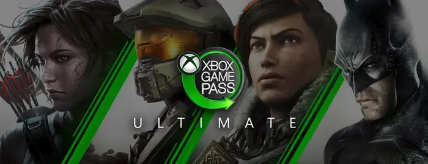

One of the biggest selling points for getting an Xbox over a PS5 is Game Pass. With Game Pass, you have access to hundreds of games for only $10 per month. Additionally, for an extra $5 per month, you can use Xbox Gold, which lets you use multiplayer.
Xbox may not have many exclusive games, but for the ones that it does have, most notably Sea of Thieves and Halo, you can play with your friends.
Being able to play so many different games with your friends is one of the biggest draws towards Xbox over PlayStation.